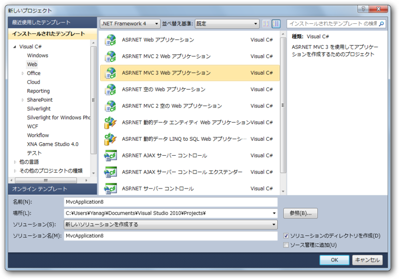
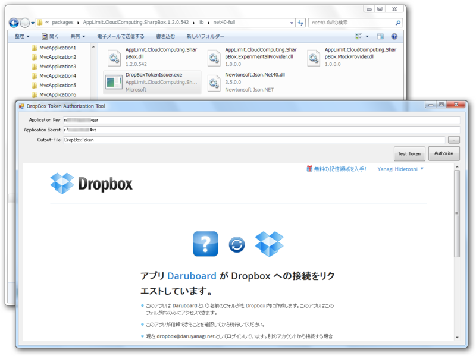

ASP.net MVC 3 で Dropbox を利用する
公開日：
自家製の Wiki システムを ASP.net MVC 3 で作ってて、「リビジョン管理機能がほしいですなぁ」と思った。そこで試行錯誤したのだけど、だんだん面倒になってきた。そしたら思いついた。「Dropbox に記事を保存すれば勝手にリビジョン管理してくれるんだから、そっちにバックアップ取ればいいじゃん」「そもそも Dropbox をデータベースとして使えばよくね？」というわけで、とりあえず Dropbox を使うところから始めてみた。
準備
まず、アプリケーションの作成。

別に認証機能は要らないや。

今回は SharpBox (http://sharpbox.codeplex.com/) を使って楽をすることにした。NuGetでさくっとインストール。

あと、https://www2.dropbox.com/developers/apps でアプリの登録をしておくのも忘れずに。APIキーをここで取得しておく必要がある。
コード
コントローラー
まず、Homeコントローラーを作る。なぜ Home という名前なのかというと、Global.asax を書き換えるのが面倒くさいからですね。わかります。スキャフォールディングも使って楽をしましょう。

Index メソッドを書く。とりあえず動かしているだけなのでごちゃごちゃしているけど、接続→ルートの取得→（ファイルアップロード）→ファイルの列挙 という操作をしているだけ。あとでモデルへ追いだそう。
public ActionResult Index()
{
var storage = new CloudStorage();
var config = CloudStorage.GetCloudConfigurationEasy(nSupportedCloudConfigurations.DropBox);
// load a valid security token from file
ICloudStorageAccessToken accessToken;
using (var fs = System.IO.File.Open(
Server.MapPath("~/App_Data/DropBoxToken"),
System.IO.FileMode.Open,
System.IO.FileAccess.Read,
System.IO.FileShare.None))
{
accessToken = storage.DeserializeSecurityToken(fs);
}
// open the connection
var storageToken = storage.Open(config, accessToken);
// get the root entry of the cloud storage
ICloudDirectoryEntry root = storage.GetRoot();
if (root == null)
{
throw new Exception("ルートあらへん。");
}
// Upload file
if (root.Length == 0)
{
storage.UploadFile(Server.MapPath("~/App_Data/Home.md"), root);
}
// Enum files
var model = new List<ICloudFileSystemEntry>();
foreach (ICloudFileSystemEntry entry in root)
{
// フィルタリングとか。あ、Linq使えばよかった
model.Add(entry);
}
// close the cloud storage connection
if (storage.IsOpened)
{
storage.Close();
}
return View(model);
}
トークンファイルの作成
言い忘れていたが、 /App_Data/DropBoxToken は、SharpBox に付属のツールで作成する。（プロジェクトフォルダ）\packages\AppLimit.CloudComputing.SharpBox.1.2.0.542\lib\net40-full にあるので探してみよう。これがわからなくてだいぶググった。じゃなくてビングった。SharpBox 1.2 から認証周りがだいぶ変わっていて、サンプル読んでいるとダマされるので注意。

できたファイルは App_Data に突っ込んでおいた。あまり自信はないけど、APS.net の作法ではこれでいい気がする。ついでにファイルが何もない場合にアップロードする初期ファイル（Home.md）も、ここに用意しておいた。
ビュー
Home/Index のビューを作成する。Index メソッドのコンテキストメニューから簡単に作成できる。
@model List<AppLimit.CloudComputing.SharpBox.ICloudFileSystemEntry>
@{
ViewBag.Title = "Index";
}
<h2>Index</h2>
<ul>
@foreach (var i in Model)
{
<li>@i.Name (@i.Modified)</li>
}
</ul>

Thanks!
ほとんどここを参照したので、みんなも見てみればいいと思うよ。 → Unboxing Dropbox and SharpBox | Jayway Team Blog - Sharing Experience